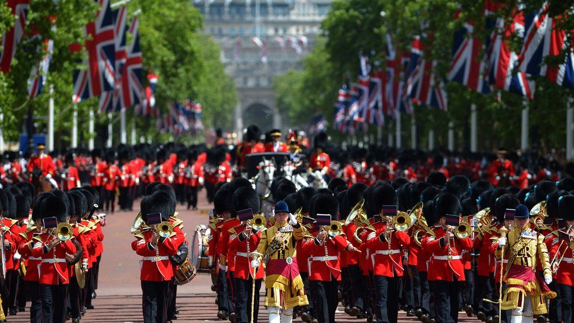

|
|
Home Page | Culture | Food | Summary in Spanish | Monarchy | About Us | Contact Us |
Culture

|
The culture of the United Kingdom is influenced by its combined nations' history, religious life, interaction with the cultures of Europe, and
the impact of the British Empire. The UK is a fusion of the cultures of England, Wales, Scotland, and Northern Ireland, and is known for its
literary traditions, music, cinema, art, architecture, and television. The population is primarily Caucasian, with significant contributions
from black, Indian, and Pakistani communities. The UK is also known for its diverse social structure, with various dialects and accents, and a
range of languages spoken, including English, Irish Gaelic, Scottish Gaelic, Polish, Bengali, Gujarati, Punjabi, Arabic, Mandarin, French,
and Portuguese. British culture is characterized by traditions such as cheese rolling, Christmas, and New Year's Eve celebrations.
Additionally, the UK is known for its traditional dishes, including fish and chips, full English breakfast, and Sunday roast, as well as its love
for tea. The British people are described as cheerful and fun-loving, and the UK is considered a "cultural superpower," with London being
described as a world cultural capital.
The culture of the United Kingdom is a rich and diverse tapestry, shaped by the traditions, languages, and social norms of England, Wales, Scotland, and Northern Ireland, as well as the contributions of various ethnic communities and the influence of global interactions. |
|

Emotional control: Generally, Britons appreciate emotional control. Effusive behavior may not be well-received. Regional dialects and accents: There are variations in the way each national identity within the UK is perceived. For example, Scottish, Welsh, and Irish people tend to be more aware of a dual identity (e.g. being both Scottish and British). The British can often quickly detect which county a person is from by their accent alone, and may sometimes be able to pinpoint their town of upbringing just from their. Sporting events: Sporting events like football and rugby are a large part of culture in the United Kingdom. Language: The British are masters of the language. A quick wit and the ability to play with words are highly regarded in British culture. British English is a matter of national pride, and most. Social etiquette: British people share their love for tea and the British Royal family. There are many things to learn about British culture, customs, and traditions. For example, greetings, punctuality, and table manners are important social norms. |